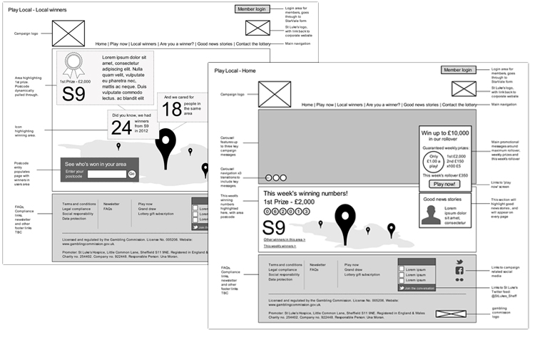

St. Luke's Hospice wanted to introduce a new online lottery, to raise money for the charity, and promote how the people of Sheffield were being helped by the organisation. I worked closely with the client, to establish a responsive framework and content for a lottery microsite, to link from the charity's corporate site.

I managed a small, in-house project team to design and build the site, and I worked with colleagues and the client to make sure the development was on schedule and built to a high standard.
Client: St Luke's Hospice
Date: September 2013
Tag: user research, wireframes, IA